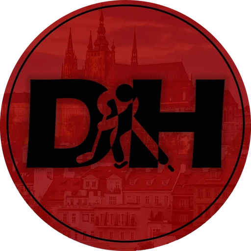

<title>Deník Hokeje Studio</title>
<meta name="claude:viewport-fit-sides" content="cover">
<link rel="stylesheet" href="brand.css">
<style>
  /* Layout: tmavá redakční "střižna" – úzký sloupec textu, široké pásy pro grafiku, sticky navigace */
  :root {
    --bg: #08090B;
    --panel: #10141B;
    --line: #222A36;
    --fg: #F2F6FA;
    --muted: #93A1B3;
    --accent: #E10600;
    --brand: #A41E1E;
    --display: "Bebas Neue", "Barlow Condensed", Impact, sans-serif;
    --cond: "Barlow Condensed", "Arial Narrow", sans-serif;
    --body: "Barlow", "Helvetica Neue", Arial, sans-serif;
    color-scheme: dark;
  }
  html { scroll-behavior: smooth; scroll-padding-top: 72px; }
  @media (prefers-reduced-motion: reduce) { html { scroll-behavior: auto; } }
  body { background: var(--bg); color: var(--fg); font-family: var(--body); font-size: 16px; line-height: 1.55; }
  .wrap { max-width: 1180px; margin: 0 auto; padding-left: max(16px, env(safe-area-inset-left, 0px)); padding-right: max(16px, env(safe-area-inset-right, 0px)); }

  header.top { border-bottom: 1px solid var(--line); background: linear-gradient(180deg, #0B1A2E 0%, var(--bg) 100%); }
  header.top .wrap { display: flex; gap: 20px; align-items: center; padding-block: 28px 24px; flex-wrap: wrap; }
  header.top img { width: 76px; height: 76px; border-radius: 50%; box-shadow: 0 0 0 2px var(--fg); }
  header.top h1 { font-family: var(--display); font-weight: 400; font-size: clamp(40px, 6vw, 64px); line-height: .9; margin: 0; letter-spacing: .01em; }
  header.top p { margin: 4px 0 0; color: var(--muted); font-family: var(--cond); font-weight: 600; letter-spacing: .08em; text-transform: uppercase; font-size: 14px; }
  header.top .pack { margin-left: auto; text-align: right; min-width: 0; }
  header.top .pack strong { display: block; font-family: var(--cond); font-weight: 800; font-size: 20px; letter-spacing: .04em; text-transform: uppercase; }
  @media (max-width: 640px) { header.top .pack { margin-left: 0; text-align: left; } }

  nav.tabs { position: sticky; top: env(safe-area-inset-top, 0px); z-index: 10; background: rgba(8, 9, 11, .92); backdrop-filter: blur(8px); border-bottom: 1px solid var(--line); }
  nav.tabs .wrap { display: flex; gap: 4px; overflow-x: auto; padding-block: 10px; scrollbar-width: none; }
  nav.tabs a { flex: none; color: var(--muted); text-decoration: none; font-family: var(--cond); font-weight: 800; text-transform: uppercase; letter-spacing: .1em; font-size: 14px; padding: 8px 12px; border: 1px solid transparent; }
  nav.tabs a:hover, nav.tabs a:focus-visible { color: var(--fg); border-color: var(--line); outline: none; }

  section { border-bottom: 1px solid var(--line); }
  section > .wrap { padding-block: 48px; display: grid; gap: 24px; }
  .sec-head { display: grid; gap: 6px; }
  .sec-head .kicker { font-family: var(--cond); font-weight: 800; text-transform: uppercase; letter-spacing: .14em; font-size: 13px; color: var(--accent); }
  .sec-head h2 { font-family: var(--display); font-weight: 400; font-size: clamp(34px, 5vw, 52px); line-height: .95; margin: 0; letter-spacing: .01em; text-wrap: balance; }
  .sec-head p { margin: 0; color: var(--muted); max-width: 68ch; }
  .spec { font-family: var(--cond); font-weight: 600; letter-spacing: .06em; text-transform: uppercase; font-size: 13px; color: var(--muted); font-variant-numeric: tabular-nums; }

  .split { display: grid; grid-template-columns: minmax(0, 1.6fr) minmax(0, 1fr); gap: 28px; align-items: start; }
  @media (max-width: 860px) { .split { grid-template-columns: minmax(0, 1fr); } }
  .stack { display: grid; gap: 14px; min-width: 0; }

  .mini { display: flex; gap: 16px; align-items: flex-end; flex-wrap: wrap; }
  .mini figure { margin: 0; display: grid; gap: 6px; }
  .mini .phone-thumb { width: 168px; }

  .box { background: var(--panel); border: 1px solid var(--line); padding: 18px; display: grid; gap: 10px; min-width: 0; }
  .box h3 { margin: 0; font-family: var(--cond); font-weight: 800; text-transform: uppercase; letter-spacing: .08em; font-size: 15px; }
  .box pre { margin: 0; white-space: pre-wrap; word-break: break-word; font-family: ui-monospace, "SFMono-Regular", Menlo, Consolas, monospace; font-size: 13px; line-height: 1.55; color: #D4DCE6; }
  .box ul { margin: 0; padding-left: 18px; display: grid; gap: 4px; }
  .box-head { display: flex; justify-content: space-between; align-items: center; gap: 12px; }
  button.copy { font-family: var(--cond); font-weight: 800; letter-spacing: .1em; text-transform: uppercase; font-size: 13px; color: var(--fg); background: transparent; border: 1px solid var(--line); padding: 6px 12px; cursor: pointer; }
  button.copy:hover { border-color: var(--fg); }
  button.copy:focus-visible, .toggle input:focus-visible + span { outline: 2px solid var(--accent); outline-offset: 2px; }

  .reel { display: grid; grid-auto-flow: column; grid-auto-columns: minmax(260px, 340px); gap: 16px; overflow-x: auto; scroll-snap-type: x mandatory; padding-bottom: 14px; }
  .reel > figure { margin: 0; scroll-snap-align: start; display: grid; gap: 8px; }
  .reel figcaption, .mini figcaption { font-family: var(--cond); font-weight: 600; font-size: 13px; letter-spacing: .06em; text-transform: uppercase; color: var(--muted); }

  .tt-wrap { width: min(360px, 100%); }
  .toggle { display: inline-flex; gap: 10px; align-items: center; cursor: pointer; font-family: var(--cond); font-weight: 700; letter-spacing: .06em; text-transform: uppercase; font-size: 14px; }
  .toggle input { width: 18px; height: 18px; accent-color: #F5E400; }

  .caption-text { white-space: pre-line; font-size: 16px; line-height: 1.6; }
  .caption-text .first { font-weight: 600; }

  .script { display: grid; gap: 22px; max-width: 760px; }
  .beat { display: grid; grid-template-columns: 110px minmax(0, 1fr); gap: 18px; }
  @media (max-width: 560px) { .beat { grid-template-columns: minmax(0, 1fr); gap: 6px; } }
  .beat .tc { font-family: var(--cond); font-weight: 800; font-size: 15px; letter-spacing: .04em; color: var(--muted); font-variant-numeric: tabular-nums; padding-top: 3px; }
  .beat h4 { margin: 0 0 6px; font-family: var(--cond); font-weight: 800; text-transform: uppercase; letter-spacing: .06em; font-size: 17px; }
  .beat p { margin: 0 0 8px; }
  .vis { display: block; font-family: var(--cond); font-weight: 600; font-size: 14px; letter-spacing: .03em; color: #8FB4E8; margin-bottom: 6px; }
  .ost { display: block; font-family: var(--cond); font-weight: 600; font-size: 14px; letter-spacing: .03em; color: #F5E400; margin-bottom: 6px; }
  .verify { font-family: var(--cond); font-weight: 700; font-size: 13px; color: #FF8A80; letter-spacing: .04em; }

  .ideas { display: grid; grid-template-columns: repeat(3, minmax(0, 1fr)); gap: 16px; }
  @media (max-width: 900px) { .ideas { grid-template-columns: minmax(0, 1fr); } }
  .idea { border-top: 4px solid var(--brand); background: var(--panel); padding: 18px; display: grid; gap: 10px; align-content: start; }
  .idea .cat { font-family: var(--cond); font-weight: 800; font-size: 12px; letter-spacing: .14em; text-transform: uppercase; color: var(--muted); }
  .idea h3 { margin: 0; font-family: var(--display); font-weight: 400; font-size: 30px; line-height: 1; letter-spacing: .01em; }
  .idea dl { margin: 0; display: grid; gap: 8px; }
  .idea dt { font-family: var(--cond); font-weight: 800; font-size: 13px; letter-spacing: .08em; text-transform: uppercase; color: var(--accent); }
  .idea dd { margin: 0; font-size: 15px; }

  .swatches { display: grid; grid-template-columns: repeat(auto-fill, minmax(150px, 1fr)); gap: 12px; }
  .sw { border: 1px solid var(--line); display: grid; }
  .sw .chip { height: 72px; }
  .sw .meta { padding: 10px 12px; display: grid; gap: 2px; background: var(--panel); }
  .sw .meta b { font-family: var(--cond); font-weight: 800; text-transform: uppercase; letter-spacing: .06em; font-size: 14px; }
  .sw .meta code { font-size: 13px; color: var(--muted); }
  .type-spec { display: grid; gap: 14px; }
  .type-spec .d { font-family: var(--display); font-size: clamp(44px, 7vw, 76px); line-height: .9; }
  .type-spec .c { font-family: var(--cond); font-weight: 800; font-size: 26px; text-transform: uppercase; letter-spacing: .08em; }
  .type-spec .b { font-family: var(--body); font-size: 18px; max-width: 60ch; }
  .rules { display: grid; grid-template-columns: repeat(auto-fit, minmax(240px, 1fr)); gap: 12px; }

  footer.end .wrap { padding-block: 32px 48px; color: var(--muted); font-size: 14px; display: grid; gap: 6px; }
  footer.end code { color: var(--fg); }
</style>

<header class="top">
  <div class="wrap">
    
    <div>
      <h1>Deník Hokeje Studio</h1>
      <p>Live preview výstupů AI enginu</p>
    </div>
    <div class="pack">
      <p>Ukázkový balík</p>
      <strong>Nagano 1998 · Turnaj století</strong>
    </div>
  </div>
</header>

<nav class="tabs" aria-label="Sekce">
  <div class="wrap">
    <a href="#thumbnail">Thumbnail</a>
    <a href="#carousel">Carousel</a>
    <a href="#tiktok">TikTok</a>
    <a href="#caption">Caption</a>
    <a href="#scenar">Scénář</a>
    <a href="#napady">Nápady</a>
    <a href="#brand">Brand</a>
  </div>
</nav>

<!-- ============ THUMBNAIL ============ -->
<section id="thumbnail">
  <div class="wrap">
    <div class="sec-head">
      <span class="kicker">Modul B · /thumbnail</span>
      <h2>Náhledovka: „5 Z 5“</h2>
      <p>Kontrast: pět kanadských hvězd proti jednomu brankáři. Text má tři znaky a čte se i v malém náhledu na mobilu. Levá polovina je místo pro fotku podle promptu níže.</p>
    </div>
    <div class="split">
      <div class="stack">
        <div class="slide slide--yt accent-neon" data-export="nagano-1998-thumbnail">
          <div class="ice"></div>
          <div class="photo"></div>
          <div class="photo-note">Fotka: Hašek v brankovišti, maska vyhrnutá na čele, výkřik po posledním zákroku. Za ním rozmazaný kanadský hráč s hlavou dole.</div>
          <div class="yt-text">5 <span class="hl">z</span> 5</div>
          
          <div class="yt-stripe"></div>
        </div>
        <span class="spec">YouTube · 1280 × 720 · akcent neonově žlutá</span>
        <div class="mini">
          <figure>
            <div class="phone-thumb">
              <div class="slide slide--yt accent-neon">
                <div class="ice"></div><div class="photo"></div>
                <div class="yt-text">5 <span class="hl">z</span> 5</div>
                
                <div class="yt-stripe"></div>
              </div>
            </div>
            <figcaption>Test čitelnosti · 168 px (mobilní feed)</figcaption>
          </figure>
        </div>
      </div>
      <div class="stack">
        <div class="box">
          <div class="box-head"><h3>Prompt (EN)</h3><button class="copy" type="button" data-copy="prompt-yt">Kopírovat</button></div>
          <pre id="prompt-yt">Professional sports editorial photograph, 1998 Olympic ice hockey semifinal, Czech goaltender in white jersey and vintage white goalie mask pushed up on his forehead, mouth open in a primal scream of relief, eyes wide, sweat on his face, kneeling in the crease with arms spread, blurred opposing forward in red jersey skating away with head down in the background, shot on Canon EOS-1N with 300mm f/2.8, arena sodium and halide lighting, realistic ice spray, natural skin texture with pores, shallow depth of field, slight 35mm film grain, color graded dark navy and black, subject on the left half, empty dark negative space on the right for headline text, 16:9</pre>
        </div>
        <div class="box">
          <h3>Negative prompt</h3>
          <pre>plastic skin, airbrushed, CGI, 3d render, oversaturated, glowing eyes, extra fingers, distorted stick, warped jersey numbers, Olympic rings, fake logos, text artifacts, HDR halo, cartoon</pre>
        </div>
        <div class="box">
          <h3>Varianta B na A/B test</h3>
          <ul>
            <li>Text „PROČ NE GRETZKY?“ ve žluté</li>
            <li>Fotka: Gretzky sedí na střídačce, ručník kolem krku, pohled do země</li>
            <li>Emoce: zklamání a nevíra</li>
          </ul>
        </div>
      </div>
    </div>
  </div>
</section>

<!-- ============ CAROUSEL ============ -->
<section id="carousel">
  <div class="wrap">
    <div class="sec-head">
      <span class="kicker">Modul C · /post</span>
      <h2>Carousel: 8 slajdů</h2>
      <p>Úvodní slajd, který nutí swipnout, šest slajdů obsahu a výzva k akci s logem. Stejné slajdy jdou na Instagram i Facebook. Posouvej do strany.</p>
      <span class="spec">Instagram + Facebook · 1080 × 1350 (4:5) · akcent signální červená</span>
    </div>
    <div class="reel" tabindex="0" aria-label="Slajdy carouselu">

      <figure>
        <div class="slide slide--ig" data-export="nagano-1998-ig-01">
          <div class="ice"></div><div class="faceoff"></div>
          <div class="inner">
            <div class="masthead"><span class="brand">Deník Hokeje</span><span class="count">1/8</span></div>
            <div class="spacer"></div>
            <span class="tag">Semifinále · 20. 2. 1998</span>
            <h3 class="headline">5 střel.<br><span class="hl">5 zákroků.</span><br>Kanada<br>jde domů.</h3>
            <div class="redline"></div>
            <div class="footer"><span>Nagano 1998</span><span class="swipe">Swipni →</span></div>
          </div>
        </div>
        <figcaption>1 · Úvodní slajd</figcaption>
      </figure>

      <figure>
        <div class="slide slide--ig" data-export="nagano-1998-ig-02">
          <div class="ice"></div>
          <div class="inner">
            <div class="masthead"><span class="brand">Deník Hokeje</span><span class="count">2/8</span></div>
            <div class="spacer"></div>
            <div class="blueline"></div>
            <h3 class="headline">Poprvé<br>s hráči <span class="hl">NHL</span></h3>
            <p class="lede">Nagano 1998 byla první olympiáda, na kterou NHL pustila své hvězdy.</p>
            <p class="body">Kanada přivezla <b>Gretzkyho, Lindrose, Bourquea, Yzermana</b> a v brance <b>Patricka Roye</b>. Česko mělo jednoho muže, kterému v Buffalu říkali Dominátor.</p>
            <div class="footer"><span>Nagano 1998</span><span>Turnaj století</span></div>
          </div>
        </div>
        <figcaption>2 · Kontext</figcaption>
      </figure>

      <figure>
        <div class="slide slide--ig" data-export="nagano-1998-ig-03">
          <div class="ice"></div>
          <div class="inner">
            <div class="masthead"><span class="brand">Deník Hokeje</span><span class="count">3/8</span></div>
            <h3 class="headline sm">Dominik Hašek<br>v Naganu</h3>
            <div class="stats">
              <div class="stat"><span class="num">6</span><span class="lbl">zápasů,<br>všechny v brance</span></div>
              <div class="stat"><span class="num hl">0,97</span><span class="lbl">obdržené góly<br>na zápas</span></div>
              <div class="stat"><span class="num">96,1&nbsp;%</span><span class="lbl">úspěšnost<br>zákroků</span></div>
            </div>
            <div class="spacer"></div>
            <div class="footer"><span>Nagano 1998</span><span>Statistika turnaje</span></div>
          </div>
        </div>
        <figcaption>3 · Čísla</figcaption>
      </figure>

      <figure>
        <div class="slide slide--ig" data-export="nagano-1998-ig-04">
          <div class="ice"></div>
          <div class="inner">
            <div class="masthead"><span class="brand">Deník Hokeje</span><span class="count">4/8</span></div>
            <span class="tag">ČR – Kanada · semifinále</span>
            <div class="timeline">
              <div class="tl-row key"><span class="t">49:46</span><span class="e"><b>Jiří Šlégr</b><br>Česko jde ve třetí třetině do vedení 1:0.</span></div>
              <div class="tl-row"><span class="t">58:57</span><span class="e"><b>Trevor Linden</b><br>63 sekund před koncem srovnává na 1:1.</span></div>
              <div class="tl-row"><span class="t">60–70</span><span class="e"><b>Prodloužení</b><br>Kanada vystřelí 5:1, gól nepadne.</span></div>
              <div class="tl-row key"><span class="t">SO</span><span class="e"><b>Nájezdy</b><br>Rozhodne jediný gól.</span></div>
            </div>
            <div class="spacer"></div>
            <div class="footer"><span>Nagano · Big Hat</span><span>20. 2. 1998</span></div>
          </div>
        </div>
        <figcaption>4 · Průběh zápasu</figcaption>
      </figure>

      <figure>
        <div class="slide slide--ig" data-export="nagano-1998-ig-05">
          <div class="ice"></div><div class="faceoff"></div>
          <div class="inner">
            <div class="masthead"><span class="brand">Deník Hokeje</span><span class="count">5/8</span></div>
            <h3 class="headline md">Rozstřel</h3>
            <div class="shootout">
              <div class="so-row"><span class="who">Reichel<small>ČR</small></span><span class="res goal">Gól přes tyčku</span></div>
              <div class="so-row"><span class="who">Fleury<small>KAN</small></span><span class="res save">Chytil</span></div>
              <div class="so-row"><span class="who">Bourque<small>KAN</small></span><span class="res save">Chytil</span></div>
              <div class="so-row"><span class="who">Nieuwendyk<small>KAN</small></span><span class="res save">Chytil</span></div>
              <div class="so-row"><span class="who">Lindros<small>KAN</small></span><span class="res save">Břevno</span></div>
              <div class="so-row"><span class="who">Shanahan<small>KAN</small></span><span class="res save">Chytil</span></div>
            </div>
            <div class="spacer"></div>
            <div class="footer"><span>Hašek 5 z 5</span><span>ČR vítězí 2:1 po nájezdech</span></div>
          </div>
        </div>
        <figcaption>5 · Nájezdy</figcaption>
      </figure>

      <figure>
        <div class="slide slide--ig" data-export="nagano-1998-ig-06">
          <div class="ice"></div>
          <div class="inner">
            <div class="masthead"><span class="brand">Deník Hokeje</span><span class="count">6/8</span></div>
            <div class="spacer"></div>
            <h3 class="headline">A kde byl<br><span class="hl">Gretzky?</span></h3>
            <p class="lede">Na střídačce.</p>
            <p class="body">Trenér <b>Marc Crawford</b> nedal nejlepšího střelce historie NHL mezi pět jmen pro nájezdy. Kanada to rozebírá dodnes.</p>
            <div class="spacer"></div>
            <div class="footer"><span>Nagano 1998</span><span>Rozhodnutí trenéra</span></div>
          </div>
        </div>
        <figcaption>6 · Kontroverze</figcaption>
      </figure>

      <figure>
        <div class="slide slide--ig" data-export="nagano-1998-ig-07">
          <div class="ice"></div>
          <div class="inner">
            <div class="masthead"><span class="brand">Deník Hokeje</span><span class="count">7/8</span></div>
            <span class="tag">Finále · 22. 2. 1998</span>
            <h3 class="headline md">ČR 1:0 Rusko</h3>
            <p class="lede">Ve třetí třetině pálí od modré <b>Petr Svoboda</b> po přihrávce Martina Procházky. Jediný gól finále.</p>
            <p class="body">Hašek zastaví všech <b>20 střel</b>. V Praze se na Staroměstském náměstí sejdou desetitisíce lidí a skandují:</p>
            <p class="chant">Hašek<br><span class="hl">na Hrad!</span></p>
            <div class="spacer"></div>
          </div>
        </div>
        <figcaption>7 · Finále a Praha</figcaption>
      </figure>

      <figure>
        <div class="slide slide--ig" data-export="nagano-1998-ig-08">
          <div class="ice"></div><div class="faceoff"></div>
          <div class="inner">
            <div class="masthead"><span class="brand">Deník Hokeje</span><span class="count">8/8</span></div>
            <div class="spacer"></div>
            
            <h3 class="headline sm" style="text-align:center">Kde jsi byl ty,<br>když padl <span class="hl">gól Svobody?</span></h3>
            <p class="body" style="text-align:center; margin-inline:auto">Napiš to do komentářů. Nejlepší vzpomínky dáme do videa.</p>
            <div class="cta-actions"><span>Komentuj</span><span>Ulož si</span><span>Sleduj</span></div>
            <div class="spacer"></div>
          </div>
        </div>
        <figcaption>8 · Výzva k akci</figcaption>
      </figure>

    </div>
  </div>
</section>

<!-- ============ TIKTOK ============ -->
<section id="tiktok">
  <div class="wrap">
    <div class="sec-head">
      <span class="kicker">Modul C · /post · TikTok</span>
      <h2>TikTok foto-carousel 9:16</h2>
      <p>Stejný obsah, vyšší formát. Text drží mimo zóny, které na TikToku zakrývá popisek, tlačítka a horní lišta. Zapni si jejich zobrazení.</p>
      <span class="spec">TikTok · 1080 × 1920 (9:16)</span>
    </div>
    <label class="toggle"><input type="checkbox" id="safe-toggle"><span>Ukázat zakryté zóny TikToku</span></label>
    <div class="tt-wrap">
      <div class="slide slide--tt" id="tt-slide" data-export="nagano-1998-tiktok-01">
        <div class="ice"></div><div class="faceoff"></div>
        <div class="inner">
          <div class="masthead"><span class="brand">Deník Hokeje</span></div>
          <div class="spacer"></div>
          <span class="tag">Nagano 1998</span>
          <h3 class="headline">5 střel.<br><span class="hl">5 zákroků.</span><br>Kanada<br>jde domů.</h3>
          <div class="redline"></div>
          <p class="body">Jak Hašek vyřadil nejlepší tým světa.</p>
        </div>
        <div class="safe" aria-hidden="true"><i class="top"></i><i class="side"></i><i class="bottom"></i></div>
      </div>
    </div>
  </div>
</section>

<!-- ============ CAPTION ============ -->
<section id="caption">
  <div class="wrap">
    <div class="sec-head">
      <span class="kicker">Modul C · Caption</span>
      <h2>Text k příspěvku</h2>
      <p>Pro Instagram, Facebook i TikTok. Na TikToku stačí první dva odstavce a hashtagy.</p>
    </div>
    <div class="box" style="max-width: 720px">
      <div class="box-head"><h3>Caption</h3><button class="copy" type="button" data-copy="caption-text">Kopírovat</button></div>
      <div class="caption-text" id="caption-text"><span class="first">5 střel. 5 zákroků. A celá Kanada v šoku. 🥅</span>

20. února 1998 zastavil Dominik Hašek v nájezdech Fleuryho, Bourquea, Nieuwendyka, Lindrose i Shanahana. O dva dny později poslal Petr Svoboda Česko pro olympijské zlato.

Swipni a projdi si turnaj století krok za krokem. 👉

❓ Kde jsi byl ty, když padl gól Svobody? A jestli jsi tehdy ještě nebyl na světě, co ti o Naganu vyprávěli doma?

#denikhokeje #nagano1998 #hasek #dominator #hokej #ceskyhokej #olympiada #nhl #turnajstoleti #hokejovahistorie</div>
    </div>
  </div>
</section>

<!-- ============ SCÉNÁŘ ============ -->
<section id="scenar">
  <div class="wrap">
    <div class="sec-head">
      <span class="kicker">Modul A · /scenar</span>
      <h2>Scénář: Šest zápasů, které změnily český hokej</h2>
      <p>Začátek scénáře a osnova kapitol. Cílová délka 12 minut, asi 1 700 slov.</p>
    </div>
    <div class="script">
      <div class="beat">
        <span class="tc">0:00–0:10</span>
        <div>
          <h4>Hook</h4>
          <span class="vis">[VISUAL: černá obrazovka, jen zvuk bruslí. Střih na zpomalený záběr: Lindros najíždí na Haška.]</span>
          <p>Dvacátého února 1998. Pět nejlepších střelců Kanady. Jeden brankář z Pardubic. A otázka, kterou si hokejová Kanada klade dodnes: proč na led nešel Wayne Gretzky?</p>
        </div>
      </div>
      <div class="beat">
        <span class="tc">0:10–0:45</span>
        <div>
          <h4>Retenční zlom</h4>
          <span class="ost">[TEXT NA OBRAZOVCE: NAGANO 1998 · 6 ZÁPASŮ · 6 OBDRŽENÝCH GÓLŮ]</span>
          <p>Tohle je příběh šesti zápasů, které změnily český hokej. Projdeme semifinále minutu po minutě, rozebereme rozstřel, o kterém se v Kanadě mluví dodnes, a na konci se dostaneme k jedné střele od modré čáry, po které zaplnily pražské ulice desetitisíce lidí. A řekneme si, proč se na Nagano vzpomíná i po osmadvaceti letech.</p>
        </div>
      </div>
      <div class="beat">
        <span class="tc">Kap. 1</span>
        <div>
          <h4>Turnaj, na který čekal svět</h4>
          <span class="vis">[VISUAL: archiv, zahájení her v Naganu, hvězdy NHL na prvním tréninku]</span>
          <p>NHL poprvé přerušila sezonu a pustila hráče na olympiádu. Kanada a USA jsou favorité, Česko outsider s jedním trumfem.</p>
        </div>
      </div>
      <div class="beat">
        <span class="tc">Kap. 2</span>
        <div>
          <h4>Dominátor</h4>
          <span class="vis">[VISUAL: Hašek v dresu Buffala, akrobatické zákroky]</span>
          <span class="ost">[TEXT NA OBRAZOVCE: Hart Trophy 1997]</span>
          <p>Úřadující držitel Hart Trophy pro nejužitečnějšího hráče NHL. Styl, který trenéři brankářů nedoporučovali, a výsledky, se kterými nikdo nepolemizoval.</p>
        </div>
      </div>
      <div class="beat">
        <span class="tc">Kap. 3</span>
        <div>
          <h4>Semifinále minutu po minutě</h4>
          <span class="ost">[TEXT NA OBRAZOVCE: časová osa 49:46 · 58:57 · prodloužení]</span>
          <p>Šlégrův gól ve třetí třetině, Lindenovo vyrovnání 63 sekund před koncem, deset minut prodloužení bez gólu.</p>
        </div>
      </div>
      <div class="beat">
        <span class="tc">Kap. 4</span>
        <div>
          <h4>Pět nájezdů, jedno rozhodnutí</h4>
          <span class="vis">[VISUAL: všech pět kanadských nájezdů za sebou, zpomaleně]</span>
          <p>Reichel trefí tyčku a puk zapadne do branky. Pak Hašek chytá Fleuryho, Bourquea, Nieuwendyka, Lindrose a Shanahana. Gretzky sedí na střídačce.</p>
          <span class="verify">[OVĚŘIT: Lindros, břevno nebo tyčka; prameny se liší]</span>
        </div>
      </div>
      <div class="beat">
        <span class="tc">Kap. 5</span>
        <div>
          <h4>Finále: jedna střela od modré</h4>
          <span class="vis">[VISUAL: gól Petra Svobody, reakce střídačky]</span>
          <p>Procházka, Svoboda, gól. Hašek zastaví všech dvacet střel a Česko má zlato.</p>
        </div>
      </div>
      <div class="beat">
        <span class="tc">Kap. 6</span>
        <div>
          <h4>Hašek na Hrad</h4>
          <span class="vis">[VISUAL: Staroměstské náměstí v noci, tisíce lidí, vlajky. Pomalý přechod na logo Deník Hokeje s Hradem.]</span>
          <p>Návrat do Prahy, oslavy a skandování, které zná každý český fanoušek.</p>
        </div>
      </div>
      <div class="beat">
        <span class="tc">Závěr</span>
        <div>
          <h4>Výzva k akci</h4>
          <p>Kde jste byli vy, když padl gól Svobody? Napište to do komentářů. Nejlepší vzpomínky přečteme v příštím videu. A jestli chcete další díl o tom, proč Gretzky na nájezd nešel, dejte odběr.</p>
        </div>
      </div>
    </div>
  </div>
</section>

<!-- ============ NÁPADY ============ -->
<section id="napady">
  <div class="wrap">
    <div class="sec-head">
      <span class="kicker">Modul D · /napady</span>
      <h2>Další témata na videa</h2>
      <p>Formát: název, hook a úhel pohledu, koncept náhledovky a důvod, proč to bude fungovat.</p>
    </div>
    <div class="ideas">
      <article class="idea">
        <span class="cat">Kontroverze</span>
        <h3>Proč Gretzky nešel na nájezd?</h3>
        <dl>
          <dt>Hook</dt><dd>Největší střelec historie seděl na střídačce, zatímco Kanada vypadla. Kdo to rozhodl a proč?</dd>
          <dt>Náhledovka</dt><dd>Gretzky s ručníkem na střídačce proti Haškovi s rukama nahoře. Text „PROČ ON?“</dd>
          <dt>Proč to bude fungovat</dt><dd>Navazuje na Nagano a otevřenou otázku z videa. Zaujme české i kanadské publikum.</dd>
        </dl>
      </article>
      <article class="idea">
        <span class="cat">Finance</span>
        <h3>Kolik dostali zlatí hoši z Nagana?</h3>
        <dl>
          <dt>Hook</dt><dd>Odměny za olympijské zlato v roce 1998 proti tomu, co dnes hráči vydělají za jeden zápas NHL.</dd>
          <dt>Náhledovka</dt><dd>Zlatá medaile proti balíku dolarů. Text „JEN TOLIK?“</dd>
          <dt>Proč to bude fungovat</dt><dd>Peníze a srovnání „tehdy a dnes“ patří k nejsdílenějším tématům. <span class="verify">[OVĚŘIT: výše odměn]</span></dd>
        </dl>
      </article>
      <article class="idea">
        <span class="cat">Rivalita</span>
        <h3>Sparta proti Slavii: válka o Prahu</h3>
        <dl>
          <dt>Hook</dt><dd>Dva kluby, jedno město, desítky let napětí. Které derby bylo nejostřejší?</dd>
          <dt>Náhledovka</dt><dd>Dva kapitáni čelem k sobě při vhazování, rozdělení napůl rudou a červenobílou. Text „DERBY“</dd>
          <dt>Proč to bude fungovat</dt><dd>Silné fanouškovské tábory = komentáře. Pražský motiv sedí k logu kanálu.</dd>
        </dl>
      </article>
    </div>
  </div>
</section>

<!-- ============ BRAND ============ -->
<section id="brand">
  <div class="wrap">
    <div class="sec-head">
      <span class="kicker">Design system</span>
      <h2>Brand Deník Hokeje</h2>
      <p>Barvy, písma a pravidla, ze kterých engine skládá všechny výstupy.</p>
    </div>
    <div class="swatches">
      <div class="sw"><div class="chip" style="background:#0A0A0C"></div><div class="meta"><b>Hokejová černá</b><code>#0A0A0C</code></div></div>
      <div class="sw"><div class="chip" style="background:#0B1A2E"></div><div class="meta"><b>Noční led</b><code>#0B1A2E</code></div></div>
      <div class="sw"><div class="chip" style="background:#F2F6FA"></div><div class="meta"><b>Ledově bílá</b><code>#F2F6FA</code></div></div>
      <div class="sw"><div class="chip" style="background:#A41E1E"></div><div class="meta"><b>Deník červená</b><code>#A41E1E</code></div></div>
      <div class="sw"><div class="chip" style="background:#870709"></div><div class="meta"><b>Bordó</b><code>#870709</code></div></div>
      <div class="sw"><div class="chip" style="background:#E10600"></div><div class="meta"><b>Signální červená</b><code>#E10600</code></div></div>
      <div class="sw"><div class="chip" style="background:#F5E400"></div><div class="meta"><b>Neonově žlutá</b><code>#F5E400</code></div></div>
    </div>
    <div class="box type-spec">
      <span class="d">Bebas Neue · Hašek na Hrad</span>
      <span class="c">Barlow Condensed · Semifinále 20. 2. 1998</span>
      <span class="b">Barlow · Běžný text slajdů a popisků. Plná podpora české diakritiky: ěščřžýáíéůú ĚŠČŘŽÝÁÍÉŮÚ.</span>
    </div>
    <div class="rules">
      <div class="box"><h3>Akcenty</h3><p style="margin:0">Posty a carousely: signální červená. Náhledovky: neonově žlutá, když je fotka sama plná červené, jinak červená. Vždy jen jeden akcent.</p></div>
      <div class="box"><h3>Formáty</h3><p style="margin:0">Instagram a Facebook 1080 × 1350. TikTok 1080 × 1920 se zakrytými zónami. YouTube 1280 × 720.</p></div>
      <div class="box"><h3>Logo</h3><p style="margin:0">V hlavičce každého slajdu, velké na posledním. Nikdy neořezávat ani nepřebarvovat. Na tmavém podkladu s bílým okrajem.</p></div>
      <div class="box"><h3>Bez AI looku</h3><p style="margin:0">Fotky jen jako redakční sportovní fotografie: přirozená kůže, světlo arény, filmové zrno. Žádné plastové obličeje ani svítící efekty.</p></div>
    </div>
  </div>
</section>

<footer class="end">
  <div class="wrap">
    <span>Zdroj v repozitáři: <code>studio/index.html</code>. Export slajdů do PNG: <code>node tools/render.mjs studio/index.html</code></span>
    <span>Fakta ověřena podle Hockey Canada, IIHF a NHL.com. Body označené [OVĚŘIT] je potřeba dohledat před zveřejněním.</span>
  </div>
</footer>

<script>
  document.querySelectorAll("button.copy").forEach(function (btn) {
    btn.addEventListener("click", function () {
      var el = document.getElementById(btn.dataset.copy);
      var text = el.innerText;
      var done = function () { btn.textContent = "Zkopírováno"; setTimeout(function () { btn.textContent = "Kopírovat"; }, 1600); };
      var fallback = function () {
        var r = document.createRange(); r.selectNodeContents(el);
        var s = window.getSelection(); s.removeAllRanges(); s.addRange(r);
        btn.textContent = "Označeno, zkopíruj Ctrl+C";
      };
      try { navigator.clipboard.writeText(text).then(done, fallback); } catch (e) { fallback(); }
    });
  });
  var tog = document.getElementById("safe-toggle");
  tog.addEventListener("change", function () { document.getElementById("tt-slide").classList.toggle("show-safe", tog.checked); });
</script>
